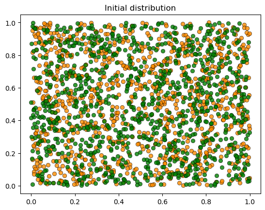
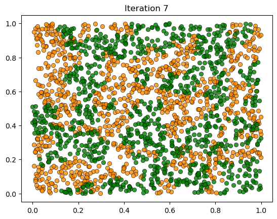

26. Schelling Model with NumPy#
26.1. Overview#
In the previous lecture, we implemented the Schelling segregation model using pure Python and standard libraries.
In this lecture, we will rewrite the model using NumPy arrays and functions.
This is intended as a first step towards greater efficiency.
In later lectures, we’ll improve execution speed further by adopting JAX and modifying algorithms.
We’ll achieve greater speed — but at the cost of readability!
import matplotlib.pyplot as plt
import numpy as np
from numpy.random import uniform
import time
26.2. Data Representation#
In the class-based version, each agent was an object storing its own type and location.
Here we take a different approach: we store all agent data in NumPy arrays.
locations— an \(n \times 2\) array where row \(i\) holds the \((x, y)\) coordinates of agent \(i\)types— an array of length \(n\) where entry \(i\) is 0 or 1, indicating agent \(i\)’s type
Let’s set up the parameters:
num_of_type_0 = 1000 # number of agents of type 0 (orange)
num_of_type_1 = 1000 # number of agents of type 1 (green)
n = num_of_type_0 + num_of_type_1 # total number of agents
num_neighbors = 10 # number of agents viewed as neighbors
max_other_type = 6 # max number of different-type neighbors tolerated
Here’s a function to initialize the state with random locations and types:
def initialize_state():
locations = uniform(size=(n, 2))
types = np.zeros(n, dtype=int)
types[num_of_type_0:] = 1
return locations, types
Let’s see what this looks like:
np.random.seed(1234)
locations, types = initialize_state()
print(f"locations shape: {locations.shape}")
print(f"First 5 locations:\n{locations[:5]}")
print(f"\ntypes shape: {types.shape}")
print(f"First 20 types: {types[:20]}")
locations shape: (2000, 2)
First 5 locations:
[[0.19151945 0.62210877]
[0.43772774 0.78535858]
[0.77997581 0.27259261]
[0.27646426 0.80187218]
[0.95813935 0.87593263]]
types shape: (2000,)
First 20 types: [0 0 0 0 0 0 0 0 0 0 0 0 0 0 0 0 0 0 0 0]
26.3. Helper Functions#
Let’s write some functions that compute what we need while operating on the arrays.
26.3.1. Checking Unhappiness#
An agent is unhappy if more than max_other_type of their nearest neighbors
are of a different type:
def is_unhappy(i, locations, types):
" True if agent i has more than max_other_type neighbors of a different type. "
# Compute distance from agent i to every other agent
distances = np.linalg.norm(locations[i] - locations, axis=1)
distances[i] = np.inf # exclude self
neighbors = np.argsort(distances)[:num_neighbors] # indices of nearest
num_other = np.sum(types[neighbors] != types[i])
return num_other > max_other_type
# Check if agent 0 is unhappy
print(f"Agent 0 type: {types[0]}")
print(f"Agent 0 unhappy: {is_unhappy(0, locations, types)}")
Agent 0 type: 0
Agent 0 unhappy: False
26.3.2. Moving Unhappy Agents#
When an agent is unhappy, they keep trying new random locations until they find one where they’re happy:
def update_agent(i, locations, types, max_attempts=10_000):
" Move agent i to a new location where they are happy. "
attempts = 0
while is_unhappy(i, locations, types) and attempts < max_attempts:
locations[i, :] = uniform(), uniform()
attempts += 1
Note that locations[i, :] = ... modifies the array in place — the change
is visible to all code that references locations.
26.4. Visualization#
Here’s some code for visualization — we’ll skip the details
def plot_distribution(locations, types, title):
" Plot the distribution of agents. "
fig, ax = plt.subplots()
plot_args = {
'markersize': 6, 'alpha': 0.8,
'markeredgecolor': 'black',
'markeredgewidth': 0.5
}
colors = 'darkorange', 'green'
for agent_type, color in zip((0, 1), colors):
idx = (types == agent_type)
ax.plot(locations[idx, 0],
locations[idx, 1],
'o',
markerfacecolor=color,
**plot_args)
ax.set_title(title)
plt.show()
Let’s visualize the initial random distribution:
np.random.seed(1234)
locations, types = initialize_state()
plot_distribution(locations, types, 'Initial random distribution')
{kind=link}
26.5. The Simulation#
Now we put it all together.
As in the first lecture, each iteration cycles through all agents in order, giving each the opportunity to move:
def run_simulation(max_iter=100_000, seed=42):
"""
Run the Schelling simulation.
Each iteration cycles through all agents, giving each a chance to move.
"""
np.random.seed(seed)
locations, types = initialize_state()
plot_distribution(locations, types, 'Initial distribution')
# Loop until no agent wishes to move
start_time = time.time()
converged = False
for iteration in range(1, max_iter + 1):
print(f'Entering iteration {iteration}')
someone_moved = False
for i in range(n):
if is_unhappy(i, locations, types):
update_agent(i, locations, types)
someone_moved = True
if not someone_moved:
converged = True
break
elapsed = time.time() - start_time
plot_distribution(locations, types, f'Iteration {iteration}')
if converged:
print(f'Converged in {elapsed:.2f} seconds after {iteration} iterations.')
else:
print('Hit iteration bound and terminated.')
return locations, types
26.6. Results#
Let’s run the simulation:
locations, types = run_simulation()
{kind=link}

Entering iteration 1
Entering iteration 2
Entering iteration 3
Entering iteration 4
Entering iteration 5
Entering iteration 6
Entering iteration 7
Converged in 1.94 seconds after 7 iterations.
{kind=link}

We see the same phenomenon as in the class-based version: starting from a random mixed distribution, agents self-organize into segregated clusters.
26.7. Performance#
The NumPy version is faster than the pure Python version, but still slow for large populations.
In the next lecture, we’ll rewrite the model using JAX, which offers just-in-time compilation, GPU acceleration, and faster nearest neighbor computations.